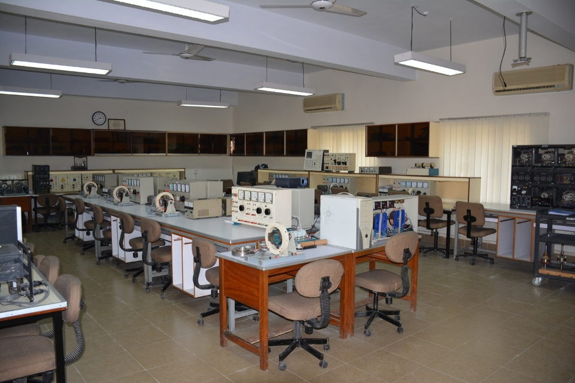
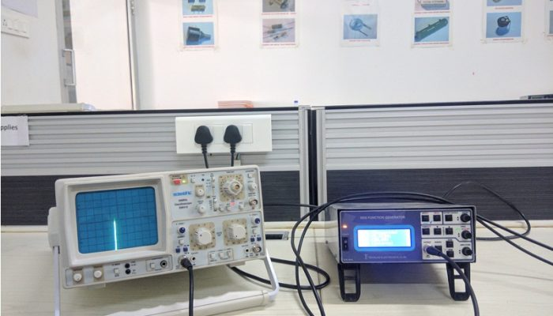
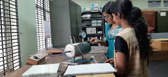
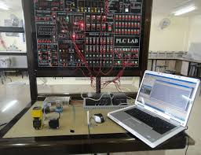
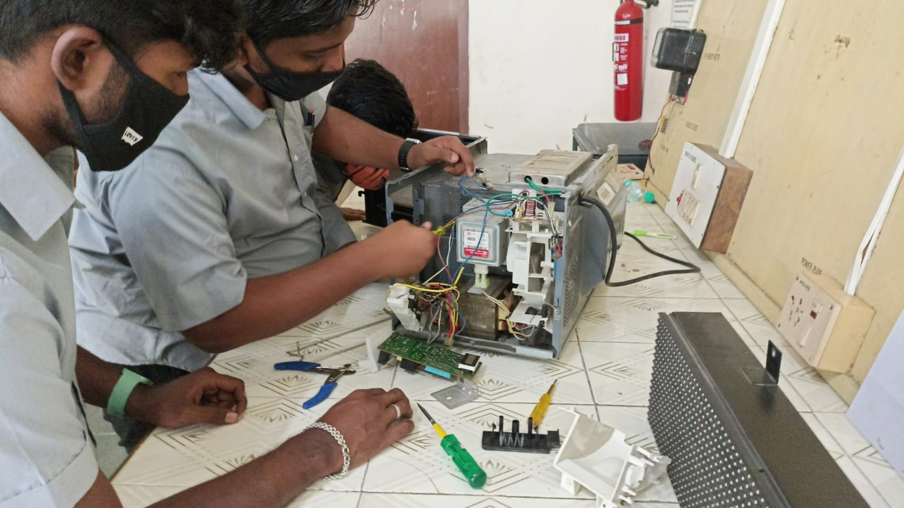
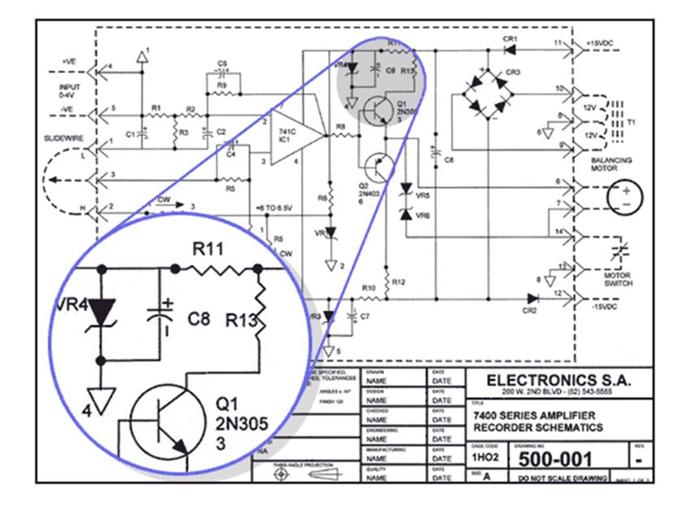
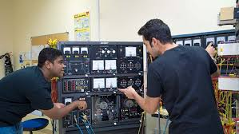

ADUSUMILLI ASWARDHA NARAYANA MURTHY&VALLURIPALLI VENKATA RAMA SESHADRI RAO
Aproved by APSBTET Mangalagiri,Vijayawada
SeshadriRao Knowledge Village,Gudlavalleru,Krishna District-521356
Electrical and Electronics Engineering is one of the largest and fastest growing fields which generally deals with the study and application of Electricity, Electronics & Electromagnetism. The department of Electrical and Electronics Engineering was established in the year 2002 with an objective to develop professionals through quality education with an intake of 60 students. The EEE Department at AANM&VVRSR Polytechnic college prepares students in this field using new-age information and computer-intensive technologies.
☛ The electrical machines lab plays a crucial role in helping students bridge the gap between theoretical knowledge and practical application.This laboratory is equipped with conventional and modern electrical and electronics measuring equipment, various AC and DC electrical machines and transformers.
☛ Electronics laboratory is used for examining operating principles of the electronic devices and obtaining the characteristics of electronic circuit components. Design and practical applications of power supplies, amplifiers, oscillators and various digital electronic circuits are studied.
☛Instrument – A device or mechanism used to determine the present value of a quantity under observation.
☛Measurement – The process of determining the amount, degree, capacity by comparison (direct or indirect) with the accepted standards of the system units being used.
☛A programmable logic controller (PLC) or programmable controller is an industrial computer that has been ruggedized and adapted for the control of manufacturing processes, such as assembly lines, machines, robotic devices, or any activity that requires high reliability, ease of programming, and process fault diagnosis.
☛Electrical wiring diagrams are essential tools in the field of electrical engineering and electrician work. They provide a visual representation of the electrical system, making it easier to install, troubleshoot, and maintain electrical circuits.
☛To produce ethical, socially conscious and innovative professionals who would contribute to sustainable technological development of the society.
 ☛A microcontroller is a compact integrated circuit designed to govern a specific operation in an embedded system. A typical microcontroller includes a processor, memory and input/output (I/O) peripherals on a single chip.
☛A microcontroller is a compact integrated circuit designed to govern a specific operation in an embedded system. A typical microcontroller includes a processor, memory and input/output (I/O) peripherals on a single chip.
☛Power system lab comprises of protection, simulation, high voltage and machine related. Facilities are available for overcurrent, under voltage, directional, differential and distance relays including different numerical relays.